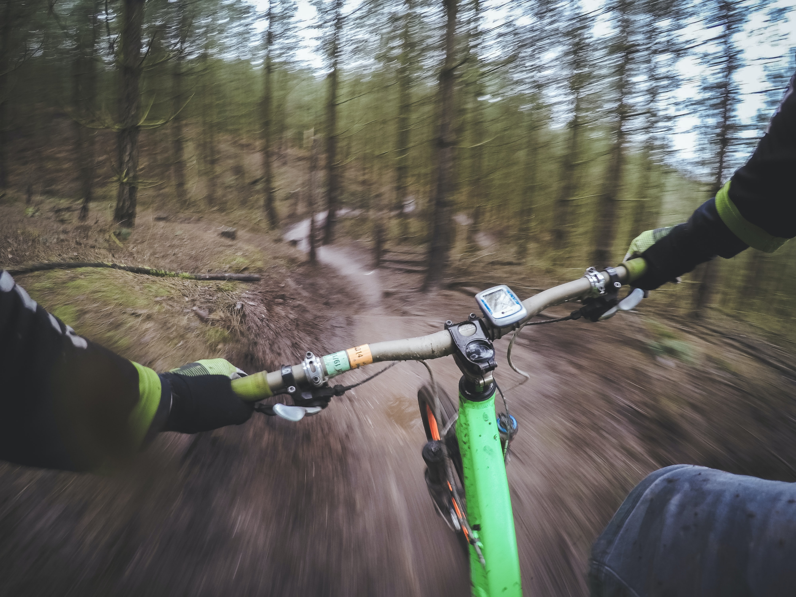
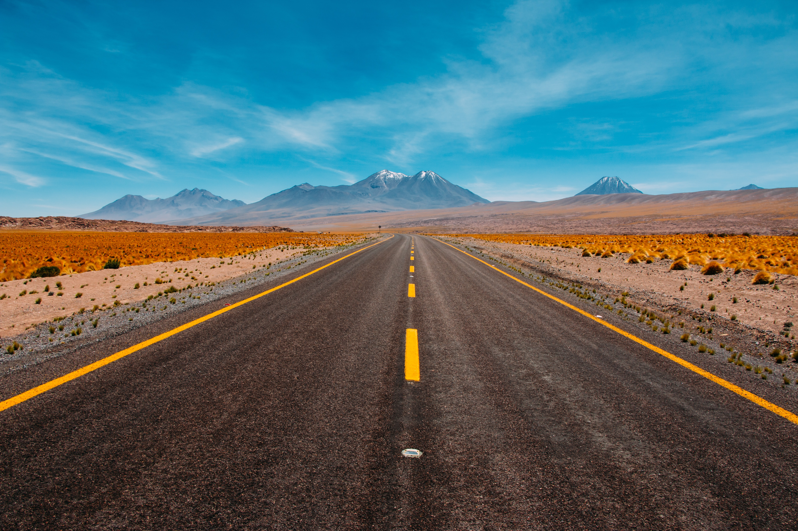

The Trails I ride
The trails I want to ride
I think this one doesn't require much explanation. Currently the limits of my exploration are the mountains and the trails. But if I had a Motorcycle, I could venture wherever I
I think this one doesn't require much explanation. Currently the limits of my exploration are the mountains and the trails. But if I had a Motorcycle, I could venture wherever I